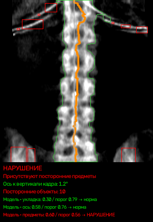
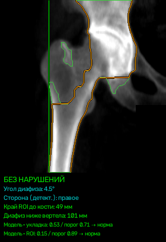
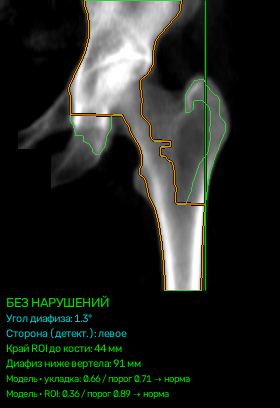
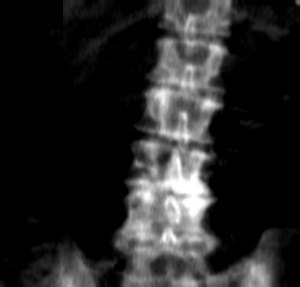
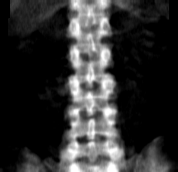
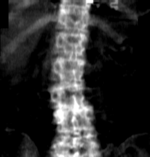

DensitoAI
Автоматический контроль качества DXA-снимков денситометра GE Lunar Prodigy
Сервис читает DICOM-изображения поясничного отдела позвоночника и проксимального отдела бедра, проверяет пять критериев качества укладки и области интереса и выдаёт отчёт строго в формате технического задания. Работает полностью локально, на CPU, в контейнере.

Реальный вывод сервиса на тестовом файле организаторов. Оранжевая линия — измеренная ось (1.2° к вертикали), зелёный контур — костная область, красные рамки — найденные плотные объекты. Скор критерия 0.60 при пороге 0.56.
Второй взгляд на снимок до того, как пациент ушёл
Некачественная укладка или неправильно выставленная область интереса обесценивают денситометрию: измеренная плотность не соответствует реальной, а пациента приходится вызывать повторно. DensitoAI автоматизирует первичный контроль качества.
Сразу после сканирования
Загружает снимки исследования и через несколько секунд видит, какой из них нужно переснять и почему: измеренный угол, расстояние до края поля, найденные предметы.
Очередь по риску и карточка решения
Партия снимков отсортирована по вероятности нарушения. По каждому снимку — критерии со скорами и порогами, измерения в миллиметрах и градусах, визуализация, рекомендуемое действие.
Отчёт строго по ТЗ
CSV с девятью колонками в заданном порядке, закрытый перечень формулировок нарушений, XLSX-сводка, HTTP API, Docker-образ и воспроизводимые метрики без утечек между обучением и проверкой.
Два независимых контура и честный порог
Мы не доверяем одной нейросети. Геометрические измерения проверяют то, что можно измерить, эмбеддинги ловят то, что видно, но трудно формализовать. Решение по каждому критерию принимается их согласованием.
DICOM на входе
Папка, zip-архив или одиночный файл. Каждый снимок обрабатывается независимо: сбой одного файла не останавливает партию.
Область
Позвоночник или бедро определяются по размеру кадра и DICOM-тегам; для нестандартной геометрии есть резервный классификатор по содержимому.
Два контура
Контур A измеряет геометрию, контур B считает эмбеддинги EfficientNet-B0. Оба обучены отдельно на каждый критерий.
Ранговый стэкинг
Скор критерия — среднее рангов двух контуров относительно out-of-fold референса. Порог подобран на OOF, не на обучении.
Отчёт
CSV по ТЗ, XLSX-сводка по исследованиям, технический CSV с признаками, PNG-визуализация и карточка решения в кабинете.
Контур A — геометрия
Сегментация кости, измерение наклона оси, смещения от центра кадра, ширины костной области, угла диафиза бедра, расстояния до бокового края, площади плотных включений. Логистическая регрессия на 1–5 признаках.
Контур B — эмбеддинги
EfficientNet-B0 даёт вектор 1280 признаков, затем стандартизация, PCA до 32 компонент и логистическая регрессия с сильной регуляризацией. Для укладки позвоночника используется дообученный на наших данных бэкбон.
Стэкинг и порог
score = 0.5·rank(геометрия) + 0.5·rank(эмбеддинги). Пороги для каждого критерия зафиксированы по out-of-fold предсказаниям с группировкой по исследованию; для редкого критерия укладки позвоночника порог взят по доле позитивов, чтобы не подстраиваться под шум.
Что именно проверяется
Формулировки нарушений — из закрытого перечня технического задания. Ниже — что они значат для лаборанта и какие измерения стоят за решением.
Укладка пациента
Позвоночник смещён от центра кадра или костная область занимает неправильную долю ширины: пациент лежит не по центру стола.
Ось позвоночника
Ось позвоночника наклонена относительно вертикали кадра. Мы прослеживаем центр кости по строкам и измеряем глобальный угол наклона.
Посторонние предметы
В поле сканирования попали пуговицы, молнии, элементы одежды или другие объекты. Плотные предметы находит геометрия, менее плотные — эмбеддинги.
Укладка пациента
Бедро недостаточно ротировано или отведено: диафиз наклонён, малый вертел выступает. Правое и левое бедро оцениваются единой моделью с зеркалированием.
Область интереса
Поле сканирования не захватывает нужную часть кости: кость упирается в край кадра или ниже вертела слишком мало диафиза. Для бедра сервис дополнительно формирует предложение исправленной области интереса.
Числа, которые мы готовы защищать
Все оценки — out-of-fold с группировкой по исследованию: модель никогда не видела снимки того исследования, на котором проверяется. Рядом с каждым критерием — ориентир заказчика: приемлемо AUC выше 0.81, высоко — выше 0.9. Мы честно показываем, где мы уже там, а где нет.
| Критерий | Область | n / позит. | AUC геом. | AUC эмб. | AUC стек | Где мы относительно ориентира | F1 OOF [95 % ДИ] | Надёжность |
|---|---|---|---|---|---|---|---|---|
Укладка пациента sp_pos · порог по доле позитивов, порог 0.791 | позвоночник | 166 / 10 | 0.611 | 0.797 | 0.715 | ниже ориентира | 0.40 [0.00; 0.72] | мало позитивов (10): результат ненадёжен, читать по AUC |
Ось позвоночника sp_axis · порог по F1 на OOF, порог 0.756 | позвоночник | 166 / 17 | 0.839 | 0.491 | 0.738 | ниже ориентира | 0.38 [0.10; 0.60] | умеренная: сильнее геометрия |
Посторонние предметы sp_art · порог по F1 на OOF, порог 0.557 | позвоночник | 166 / 35 | 0.560 | 0.897 | 0.823 | приемлемо | 0.60 [0.33; 0.76] | приемлемая, работает контур B (эмбеддинги) |
Укладка пациента hip_pos · порог по F1 на OOF, порог 0.709 | бедро, обе стороны | 329 / 79 | 0.694 | 0.635 | 0.704 | ниже ориентира | 0.51 [0.31; 0.67] | умеренная: сильнее геометрия |
Область интереса hip_roi · порог по F1 на OOF, порог 0.891 | бедро, обе стороны | 329 / 16 | 0.902 | 0.877 | 0.917 | высоко | 0.64 [0.20; 0.93] | приемлемая, работает геометрия |
Из пяти критериев 2 достигают ориентира «приемлемо» (AUC > 0.81) и 1 — ориентира «высоко» (AUC > 0.9). Остальные ниже ориентира, и мы это показываем, а не скрываем. Источник: models/metrics_summary.json (OOF, группировка по исследованию), ДИ по F1 — бутстрап по исследованиям.
Бинарная задача «есть нарушение» по областям, OOF
| Область | ROC-AUC [95 % ДИ] | F1 [95 % ДИ] | Macro-F1 по типам нарушений [95 % ДИ] |
|---|---|---|---|
| Поясничный отдел позвоночника | 0.783 [0.65; 0.89] | 0.648 [0.48; 0.78] | 0.460 [0.29; 0.61] |
| Проксимальный отдел бедра | 0.773 [0.62; 0.90] | 0.667 [0.48; 0.80] | 0.574 [0.35; 0.75] |
Источник: docs/METRICS_REPORT.md, таблица «Итого» (python src/eval_oof_metrics.py, 95 % ДИ — бутстрап по исследованиям, 2000 повторов).
О чём нужно знать до внедрения
Десять позитивов на укладку позвоночника
В обучающей выборке нарушение укладки позвоночника встретилось 10 раз из 166. Любая модель на таких данных ненадёжна: порог взят по доле позитивов, доверительный интервал F1 — от 0.00 до 0.72. На закрытом тесте по этому критерию следует ожидать результат, близкий к случайному.
Один аппарат, одна клиника, один разметчик
Все 499 снимков получены на одном GE Lunar Prodigy и размечены одним экспертом. Перенос на другие денситометры не проверен. Часть меток опирается на признаки, которые наши измерения ловят частично: например, у эксперта ось позвоночника оценивается шире, чем глобальный наклон.
Финальная проверка — у организатора
Метрики технического задания считаются организаторами на закрытом тесте. Наши OOF-оценки — честный ориентир без утечек, но не гарантия. Поэтому вместе с сервисом мы отдаём воспроизводимый протокол обучения, тесты и код подсчёта метрик.
Что видит врач
Первые три карточки — реальный вывод сервиса на тестовых файлах организаторов (без личных данных): ось, контур кости, границы области интереса и найденные предметы наносятся на снимок. Две последние — примеры критериев из обучающей выборки.
Поясничный отдел: посторонние предметы
Геометрия нашла 10 плотных объектов вне кости (красные рамки), эмбеддинги уверенно подтвердили: вероятность по контуру B 0.99. Ось при этом в норме.

Правое бедро: укладка и область интереса в норме
Диафиз почти вертикален, от кости до бокового края поля 49 мм, ниже вертела захвачено 101 мм диафиза. Оба критерия далеко от порога.

Левое бедро: сторона определена по анатомии
Тега стороны в файле нет, сторона определена по форме кости. Скор укладки 0.66 ближе к порогу 0.71: в кабинете такой снимок виден в очереди выше остальных нормальных.


Слева метка эксперта «не выравнена ось», справа норма
Геометрический контур измеряет глобальный наклон оси и отдельно даёт AUC 0.84. Эксперт, судя по данным, учитывает и локальные изгибы, поэтому часть меток геометрия не объясняет.


Слева предметы в поле сканирования, справа чистый снимок
Большинство «посторонних предметов» в разметке не металл, а одежда и объекты низкой плотности. Их ловят эмбеддинги (AUC 0.90), детектор плотных включений здесь слаб (AUC 0.56). Поэтому контуры и объединены.
Каждый снимок — с карточкой решения
Критерии со скорами, порогами и вкладом каждого контура, измерения в мм и градусах, визуализация, рекомендуемое действие: принять, проверить и при подтверждении переснять, либо проверить вручную, если файл не обработан.
Всё воспроизводится за несколько команд
Техническая группа может развернуть сервис на своих данных без нашего участия. Внешних вызовов сервис не делает.
Docker: сборка, пакетный прогон, API
# сборка образа и самопроверка ./build_and_run.sh build # пакетная обработка папки с DICOM или zip -> outputs/results.csv (+ .xlsx) ./build_and_run.sh run /path/to/dicom_folder ./outputs # HTTP API на порту 8000, Swagger: http://localhost:8000/docs ./build_and_run.sh api 8000 /path/to/dicom_folder ./outputs # тесты формата и изоляции запросов ./build_and_run.sh test
Без Docker
pip install -r requirements.txt python src/inference.py --input /path/to/dicom --output outputs/results.csv --xlsx python tests/test_inference_format.py # формат, битые входы, детерминизм python tests/test_api_isolation.py # изоляция файлов между запросами python src/eval_oof_metrics.py # метрики с ДИ -> docs/metrics_oof_full.md
Код и документы
git clone https://neuropeople.pro/git/densitoai.gitпубличный репозиторий/docsSwagger UI работающего API: открытьREADME.mdназначение, запуск, API, формат данных, ограниченияdocs/METRICS_REPORT.mdметрики по ТЗ §8.4 с 95 % ДИdocs/ROBUSTNESS_REPORT.mdустойчивость к нестандартному входуdocs/ENGINEERING_REPORT.mdинженерный отчёт о сдачеmodels/MODEL_CONTRACT.mdформат моделей и пороговconfig.yamlвсе строки, пороги и веса в одном файле
Что внутри контейнера
Python 3.12, PyTorch CPU, scikit-learn, pydicom. Модели — файлы pkl с зафиксированным контрактом, бэкбон EfficientNet-B0 лежит в образе. Ошибки отдельных файлов не роняют запрос: строка получает статус Failure и вероятность 0.5.
Откройте кабинет
Загрузите DICOM-файлы или zip-архив исследования и получите очередь по риску, карточку решения и отчёт в формате ТЗ. Без пароля доступен демо-пример на тестовых файлах организаторов.